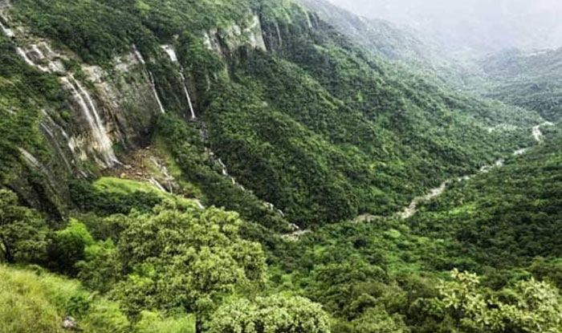
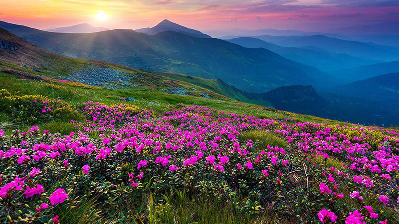
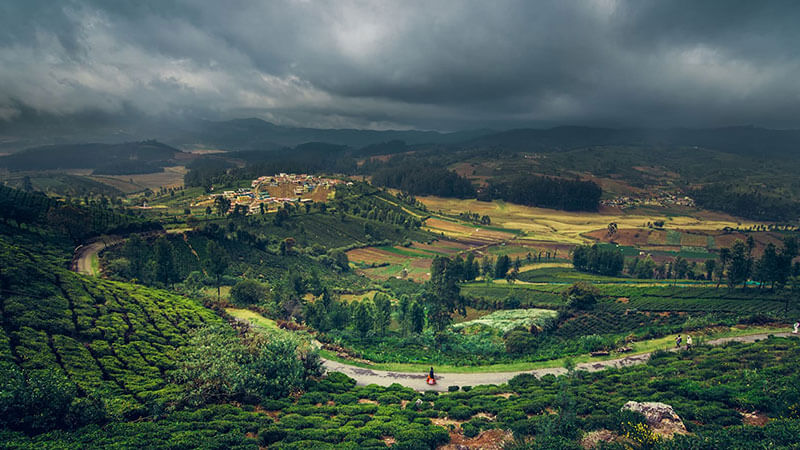

Hills
Hills
This charming but lesser known hill station in Gujarat is a wonderful destination to visit in the month of September. Although, October to March is considered to be the best time to visit Wilson Hills but September is a good time too because rates of the resorts are lesser at this time. This hill station is located in a heavily wooded region near the Pangarbari Wildlife Sanctuary..
Valley spot
valley
Valley of Flowers is a stunning national park in the gorgeous state of Uttarakhand. It is one of the most beautiful places to visit in the month of September. The valley remains open from June to the beginning of October. After that, it gets covered in snow.September is a great month to visit Valley of Flowers because flowers are blooming after the monsoon rain. The valley has about 300 different range of alpine flowers that appear to be a bright carpet of different colors against a hilly snow-covered backdrop.
OOty
ooty
Ooty is a wonderful hill station in the state of Tamil Nadu and oneamongthe ideal destinations to visit in the month of September in Southern India.Situated at an altitude of 2,240 meters above the sea level, this wonderful holiday destination appeals the visitors to enjoy verdant green surroundings, rippling streams and alluring tea gardens. In the month of September, you can enjoy here several adventure activities as the days are pleasant and nights are cool and there will be no need to carry extra luggage. You enjoy here hiking, trekking, kayaking, explore tribal settlements and experience a nice stay in homestay.
Kerala

kerala
This charming southern state of India is best known for its tranquil backwaters, tea plantations, historical monuments, serene lakes, lofty hills and wildlife parks. The backwaters of Kerala wear a vivid picture of green and Kovalam becomes a perfect place to hang out during September. Houseboats in this stunning state are crafted in traditional styles and sail across backwaters and lakes of Kerala and taking a ride on houseboat is one of its kinds of experience. In the month of September, you can enjoy here activities like cruising, Ayurvedic therapies
about article
Valley of Flowers is a stunning national park in the gorgeous state of Uttarakhand.